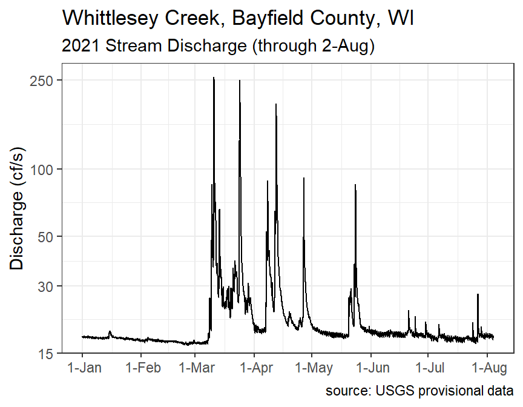
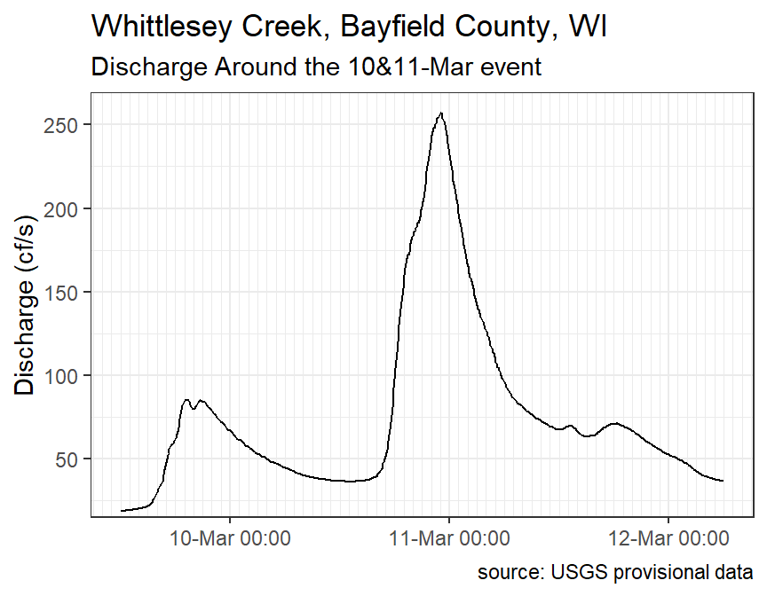

Module 9 Dates and Times
One of the most common and most difficult types of data to wrangle is date, time, or date and time data. Dates, for example, can be entered in a variety of formats (with different “standards” for different parts of the world) and there are different numbers of days in months, leap years, and starts of the week. Times have complications related to, for example, different formats (e.g., 12- versue 24-hour clock) and time zones. The most common (rather than all) difficulties with dates and times will be addressed in this module.
The methods in this module depend on functions from lubridate, which must be explicitly loaded as it is not part of tidyverse.30
library(lubridate)
9.1 Obtaining Dates Data
9.1.1 Making Dates from Strings
Dates are often entered as string or character class data, which can make them fairly easily to deal with. However, dates can be entered in many different formats, some of which can be ambiguous as to what date they represent. For example, July 15th in 2021 could be formatted as “July 15, 2021,” “15-Jul-2021,” “15-Jul-21,” “15-July-2021,” or “2021-Jul-15,” among other possibilities. Fortunately, lubridate has a suite of functions that can easily convert strings to dates as long as all dates are entered in the same format and you know what that format is.
The lubridate function names are combinations of y, m, and d in order of the year, month, and day components of the date format. For example, if dates are given as year, month, and day then use ymd(). Alternatively, if dates are given as month, day, and year then use mdy().
Each lubridate function is good at deciphering the proper dates regardless of how the components are separated (dashes, slashes, commas, spaces) or whether words or numbers are used for months. For example, a data frame is created below that has dates in year-month-day format in the DSTR variable which is then converted with ymd() to the DATE variable. Note how the DATE variable is of the “date” data class, which is what is needed for proper graphing and calculation as shown in later sections.
ex1 <- tibble(DSTR=c("2021-7-15","2020-9-21","2019-3-3"),
DATE=ymd(DSTR))
ex1#R> # A tibble: 3 x 2
#R> DSTR DATE
#R> <chr> <date>
#R> 1 2021-7-15 2021-07-15
#R> 2 2020-9-21 2020-09-21
#R> 3 2019-3-3 2019-03-03The following examples are similar except that the date strings are in different formats so different lubridate functions are used. Note how the DATE variable in each example has the same year-month-day format. Thus, regardless of the original format of the date, the “date” class variable will be the same format.
ex2 <- tibble(DSTR=c("July 15, 2021","September 11, 2020","March 3, 2019"),
DATE=mdy(DSTR))
ex2#R> # A tibble: 3 x 2
#R> DSTR DATE
#R> <chr> <date>
#R> 1 July 15, 2021 2021-07-15
#R> 2 September 11, 2020 2020-09-11
#R> 3 March 3, 2019 2019-03-03ex3 <- tibble(DSTR=c("Jul-15, 2021","Sep-11, 2020","Mar-3, 2019"),
DATE=mdy(DSTR))
ex3#R> # A tibble: 3 x 2
#R> DSTR DATE
#R> <chr> <date>
#R> 1 Jul-15, 2021 2021-07-15
#R> 2 Sep-11, 2020 2020-09-11
#R> 3 Mar-3, 2019 2019-03-03ex4 <- tibble(DSTR=c("7/15/2021","9/11/2020","3/3/2019"),
DATE=mdy(DSTR))
ex4#R> # A tibble: 3 x 2
#R> DSTR DATE
#R> <chr> <date>
#R> 1 7/15/2021 2021-07-15
#R> 2 9/11/2020 2020-09-11
#R> 3 3/3/2019 2019-03-03ex5 <- tibble(DSTR=c("15-Jul 2021","11-Sep 2020","3-Mar 2019"),
DATE=dmy(DSTR))
ex5#R> # A tibble: 3 x 2
#R> DSTR DATE
#R> <chr> <date>
#R> 1 15-Jul 2021 2021-07-15
#R> 2 11-Sep 2020 2020-09-11
#R> 3 3-Mar 2019 2019-03-03
9.1.2 Making Dates from Components
It is also common to need to created dates from three separate variables that contain the year, month, and day components of the date, respectively.
ex6 <- tibble(yr=c(2021,2020,2019),
mon=c("Jul","Sep","Mar"),
d=c(15,11,3))
ex6#R> # A tibble: 3 x 3
#R> yr mon d
#R> <dbl> <chr> <dbl>
#R> 1 2021 Jul 15
#R> 2 2020 Sep 11
#R> 3 2019 Mar 3An easy way to deal with these date components is to first combine them into a string with paste().
ex6a <- ex6 %>%
mutate(DSTR=paste(mon,d,yr))
ex6a#R> # A tibble: 3 x 4
#R> yr mon d DSTR
#R> <dbl> <chr> <dbl> <chr>
#R> 1 2021 Jul 15 Jul 15 2021
#R> 2 2020 Sep 11 Sep 11 2020
#R> 3 2019 Mar 3 Mar 3 2019The “date” class variable is then created with mdy() (in this case because of the order in which the components were pasted).
ex6a %<>% mutate(DATE=mdy(DSTR))
ex6a#R> # A tibble: 3 x 5
#R> yr mon d DSTR DATE
#R> <dbl> <chr> <dbl> <chr> <date>
#R> 1 2021 Jul 15 Jul 15 2021 2021-07-15
#R> 2 2020 Sep 11 Sep 11 2020 2020-09-11
#R> 3 2019 Mar 3 Mar 3 2019 2019-03-03The paste() is often used inside of mdy() to eliminate the need to create the intermediate DSTR variable. This is shown below, along with eliminating the original component variables to make a cleaner data frame to use in the next sections.
ex6a <- ex6 %>%
mutate(DATE=mdy(paste(mon,d,yr))) %>%
select(DATE)
ex6a#R> # A tibble: 3 x 1
#R> DATE
#R> <date>
#R> 1 2021-07-15
#R> 2 2020-09-11
#R> 3 2019-03-03
9.2 Extracting Date Components
The year, month, and day (within the month) can be extracted from a “date” class variable with year(), month(), and day(), respectively. The numeric month is extracted by month() by default. The abbreviated month will be returned if label=TRUE is used and the full month name is returned by also including abbr=FALSE.
ex6b <- ex6a %>%
mutate(yr=year(DATE),
mon=month(DATE),
mon1=month(DATE,label=TRUE),
mon2=month(DATE,label=TRUE,abbr=FALSE),
d=day(DATE))
ex6b#R> # A tibble: 3 x 6
#R> DATE yr mon mon1 mon2 d
#R> <date> <dbl> <dbl> <ord> <ord> <int>
#R> 1 2021-07-15 2021 7 Jul July 15
#R> 2 2020-09-11 2020 9 Sep September 11
#R> 3 2019-03-03 2019 3 Mar March 3Note that the two variables of month names are of the “ord” class, which means that the natural order of the months is maintained. This is useful for graphing and for making comparisons. For example,
ex6b$mon1 > "Apr"#R> [1] TRUE TRUE FALSEThere are other useful extractor functions in lubridate. Day number within the year is returned with yday().31
yday(ex6a$DATE)#R> [1] 196 255 62Numeric day of the week is returned by wday().32 The abbreviated name of the week is returned when label=TRUE is included and the full names is returned when abbr=FALSE is also included. The data type will also be “ord” when labels are returned.
wday(ex6a$DATE)#R> [1] 5 6 1wday(ex6a$DATE,label=TRUE)#R> [1] Thu Fri Sun
#R> Levels: Sun < Mon < Tue < Wed < Thu < Fri < Satwday(ex6a$DATE,label=TRUE,abbr=FALSE)#R> [1] Thursday Friday Sunday
#R> 7 Levels: Sunday < Monday < Tuesday < Wednesday < Thursday < ... < SaturdayWeek number within the year is returned with week().33
week(ex6a$DATE)#R> [1] 28 37 9Numeric day within a “quarter” is returned by qday(), whereas the actual “quarter” in which the day falls is returned by quarter().
quarter(ex6a$DATE)#R> [1] 3 3 1qday(ex6a$DATE)#R> [1] 15 73 62Whether or not a year is a leap year can be determined with leap_year().
leap_year(2010:2020)#R> [1] FALSE FALSE TRUE FALSE FALSE FALSE TRUE FALSE FALSE FALSE TRUEFinally, the current date is found with today().
today()#R> [1] "2021-08-10"
9.3 Calculations with Dates
Performing calculations on dates introduces new data classes. The main one that we will use in this course is interval. An interval is a special date class that records the start and end date of an interval of time. Intervals are created from two dates with %--%. For example, the code below creates one interval from that date in DATE to today’s date and another constant interval from January 1, 2019 to January 1, 2021. Note in the second example that the date strings must be converted to a date format first (using ymd() in this case).
ex6c <- ex6a %>%
mutate(int2now=DATE %--% today(),
int2Jan20=ymd("2019-Jan-1") %--% ymd("2021-Jan-1"))
ex6c#R> # A tibble: 3 x 3
#R> DATE int2now int2Jan20
#R> <date> <Interval> <Interval>
#R> 1 2021-07-15 2021-07-15 UTC--2021-08-10 UTC 2019-01-01 UTC--2021-01-01 UTC
#R> 2 2020-09-11 2020-09-11 UTC--2021-08-10 UTC 2019-01-01 UTC--2021-01-01 UTC
#R> 3 2019-03-03 2019-03-03 UTC--2021-08-10 UTC 2019-01-01 UTC--2021-01-01 UTCHere you can see that the two new variables contain start and end dates for the interval on either side of the --.
Use %within% to determine if a date is within an interval and int_overlaps() to determine if two intervals overlap.
ymd("2020-Jan-1") %within% ex6c$int2now#R> [1] FALSE FALSE TRUEint_overlaps(ex6c$int2now,ex6c$int2Jan20)#R> [1] FALSE TRUE TRUEThe amount of time within an interval is found with time_length() with units of measurement supplied to unit=. When units= "months" or "years" then time_length() will take into account that not all months and years have the same number of days.34
ex6d <- ex6a %>%
mutate(int2now=ex1$DATE %--% today(),
dur2now_days=time_length(int2now,unit="days"),
dur2now_yrs=time_length(int2now,unit="years"),
dur2now_mons=time_length(int2now,unit="months"))
select(ex6d,-DATE) # only so that the new variables can be seen#R> # A tibble: 3 x 4
#R> int2now dur2now_days dur2now_yrs dur2now_mons
#R> <Interval> <dbl> <dbl> <dbl>
#R> 1 2021-07-15 UTC--2021-08-10 UTC 26 0.0712 0.839
#R> 2 2020-09-21 UTC--2021-08-10 UTC 323 0.885 10.6
#R> 3 2019-03-03 UTC--2021-08-10 UTC 891 2.44 29.2
9.4 Obtaining Time Data
9.4.1 Just Times
One can work with just time in R, but I find it easier to append a constant “dummy date” to the times and then work with date-time objects. For example, suppose that the data frame below with just times (as a character variable) exists.
exT1 <- tibble(TSTR=c("12:15:01","9:14:56","19:34:01"))
exT1#R> # A tibble: 3 x 1
#R> TSTR
#R> <chr>
#R> 1 12:15:01
#R> 2 9:14:56
#R> 3 19:34:01Here, I prepend a “dummy date” of “1-Jan-2021” to each time.
exT1 %<>% mutate(DTSTR=paste("1-Jan-2021",TSTR))
exT1#R> # A tibble: 3 x 2
#R> TSTR DTSTR
#R> <chr> <chr>
#R> 1 12:15:01 1-Jan-2021 12:15:01
#R> 2 9:14:56 1-Jan-2021 9:14:56
#R> 3 19:34:01 1-Jan-2021 19:34:01This date and time string can then be handled as shown in the Section 9.6.
9.4.2 Dates and Times
Date and time strings should be in a general format that has the date first followed by the time with the two separated by a space. The date portion can be in any format as described in Section 9.1 for dates and the time should generally be in hour-minute or hour-minute-second format. The time components can be separated by nearly any character but it will usually be a “:” The DTSTR variable in the data frame created in the previous section is in this format, as is the same variable in the data frame below.
exT2 <- tibble(DTSTR=c("2021-7-15 12:15:01","2020-9-21 9:14:56","2019-3-3 19:34:01"))
exT2#R> # A tibble: 3 x 1
#R> DTSTR
#R> <chr>
#R> 1 2021-7-15 12:15:01
#R> 2 2020-9-21 9:14:56
#R> 3 2019-3-3 19:34:01a character variable with date and times in these formats are converted to a date-time class variable with the lubridate functions described in Section 9.1 but with _hm or _hms appended depending on whether the time portion is hour-minute or hour-minute-second data. For example, if the dates are in year-month-day format and the times are in hours-minutes-seconds then use ymd_hms().
Another concern with converting to a date-time class is concerns about the time zone. This most likely becomes an issue if you are finding intervals of time from a base time (say, New Years at 12 am) or among times from different time zones (e.g., airline flight data). The time zone for a date-time variable can be set with tz=. The time-zone is set with so-called “Olson Names.” You can see all names recognized in R with OlsonNames(). Most Olson Names begin with a continentent separated by a place on that continent by a forward slash. For example, America/Chicago would use the time zone for Chicago in America (i.e., “Central” time). Time zones in the United States can also generally be set with US/Eastern, US/Central, US/Mountain, and US/Pacific. Note, however, that time zones are “odd” for some areas so there are special codes for those places. One of regional note is US/Michigan.
The code below converts the DTSTR string in exT2 to a date-time class using the US/Central time zone and removes the original string (for aesthetics only). Note how the new variable is a “datetime” class.
exT2 %<>%
mutate(DATETIME=ymd_hms(DTSTR,tz="US/Central")) %>%
select(-DTSTR)
exT2#R> # A tibble: 3 x 1
#R> DATETIME
#R> <dttm>
#R> 1 2021-07-15 12:15:01
#R> 2 2020-09-21 09:14:56
#R> 3 2019-03-03 19:34:019.5 Extracting Time Components
Hours, minutes, and seconds from a date-time object can be extracted with hour(), minute(), and second().
exT2 %>%
mutate(hr=hour(DATETIME),
min=minute(DATETIME),
sec=second(DATETIME))#R> # A tibble: 3 x 4
#R> DATETIME hr min sec
#R> <dttm> <int> <int> <dbl>
#R> 1 2021-07-15 12:15:01 12 15 1
#R> 2 2020-09-21 09:14:56 9 14 56
#R> 3 2019-03-03 19:34:01 19 34 19.6 Calculations with Date-Times
As shown with dates in Section 9.3, intervals of time can be found between two times. In the example below int2now contains the interval of time between the date-time in DATETIME and the current date-time as returned by now().35 The number of hours and days are then found using time_length() in the same was as shown for dates in Section 9.3. I moved the int2now variable to the end simply so that the other two variables would show in the tibble.
exT2 %<>%
mutate(int2now=DATETIME %--% now(),
hrs2now=time_length(int2now,unit="hours"),
days2now=time_length(int2now,unit="days")) %>%
relocate(int2now,.after=last_col())
exT2#R> # A tibble: 3 x 4
#R> DATETIME hrs2now days2now
#R> <dttm> <dbl> <dbl>
#R> 1 2021-07-15 12:15:01 623. 25.9
#R> 2 2020-09-21 09:14:56 7754. 323.
#R> 3 2019-03-03 19:34:01 21374. 891.
#R> # ... with 1 more variable: int2now <Interval>
A quick return to the data frame from Section 9.4.1. Suppose that the researcher wants to find the number of minutes between the given time (which was converted to a date-time) and dinner at 6 pm. Note that if you use the trick of adding a dummy date then you must use the same dummy date here.
exT1a <- exT1 %>%
mutate(DATETIME=dmy_hms(DTSTR,tz="US/Central"),
int2dinner=DATETIME %--% dmy_hms("1-Jan-2021 18:00:00",tz="US/Central"),
mins2dinner=time_length(int2dinner,unit="minutes")) %>%
select(-TSTR,-DTSTR) %>%
relocate(mins2dinner,.after=DATETIME)
exT1a#R> # A tibble: 3 x 3
#R> DATETIME mins2dinner
#R> <dttm> <dbl>
#R> 1 2021-01-01 12:15:01 345.
#R> 2 2021-01-01 09:14:56 525.
#R> 3 2021-01-01 19:34:01 -94.0
#R> # ... with 1 more variable: int2dinner <Interval>9.7 Examples in Context
9.7.1 Sales Transactions
This example examines results for a trading company as presented in an RSquared Academy blogpost. The data in transact.csv36 represent the dates that an invoice was sent, payment of the invoice was due, and payment was received. As you can see from the data frame below, read_csv() accurately determined that each column contained dates and thus automatically read those columns in as of the date class.
trans <- read_csv(file.path("data","transact.csv"))
trans#R> # A tibble: 2,466 x 3
#R> Invoice Due Payment
#R> <date> <date> <date>
#R> 1 2013-01-02 2013-02-01 2013-01-15
#R> 2 2013-01-26 2013-02-25 2013-03-03
#R> 3 2013-07-03 2013-08-02 2013-07-08
#R> 4 2013-02-10 2013-03-12 2013-03-17
#R> 5 2012-10-25 2012-11-24 2012-11-28
#R> 6 2012-01-27 2012-02-26 2012-02-22
#R> 7 2013-08-13 2013-09-12 2013-09-09
#R> 8 2012-12-16 2013-01-15 2013-01-12
#R> 9 2012-05-14 2012-06-13 2012-07-01
#R> 10 2013-07-01 2013-07-31 2013-07-26
#R> # ... with 2,456 more rowsPart of the analysis will require summarizing results by years, quarters, and months. Thus, these variables were added to the data frame below.
trans %<>%
mutate(yr=year(Due),
mon=month(Due,label=TRUE),
qrtr=quarter(Due)) %>%
relocate(yr:qrtr)
trans#R> # A tibble: 2,466 x 6
#R> yr mon qrtr Invoice Due Payment
#R> <dbl> <ord> <int> <date> <date> <date>
#R> 1 2013 Feb 1 2013-01-02 2013-02-01 2013-01-15
#R> 2 2013 Feb 1 2013-01-26 2013-02-25 2013-03-03
#R> 3 2013 Aug 3 2013-07-03 2013-08-02 2013-07-08
#R> 4 2013 Mar 1 2013-02-10 2013-03-12 2013-03-17
#R> 5 2012 Nov 4 2012-10-25 2012-11-24 2012-11-28
#R> 6 2012 Feb 1 2012-01-27 2012-02-26 2012-02-22
#R> 7 2013 Sep 3 2013-08-13 2013-09-12 2013-09-09
#R> 8 2013 Jan 1 2012-12-16 2013-01-15 2013-01-12
#R> 9 2012 Jun 2 2012-05-14 2012-06-13 2012-07-01
#R> 10 2013 Jul 3 2013-07-01 2013-07-31 2013-07-26
#R> # ... with 2,456 more rowsTwo questions that the team wanted to ask from these data were (1) what is the average days it took to make payment (from when the invoice was issued and (2) the average days past due for payments that were not paid on time. Answering the first question requires making an interval of the invoice to payment time and then determining how long that interval was.
trans %<>%
mutate(settle_days=time_length(Invoice %--% Payment,unit="days"))
trans#R> # A tibble: 2,466 x 7
#R> yr mon qrtr Invoice Due Payment settle_days
#R> <dbl> <ord> <int> <date> <date> <date> <dbl>
#R> 1 2013 Feb 1 2013-01-02 2013-02-01 2013-01-15 13
#R> 2 2013 Feb 1 2013-01-26 2013-02-25 2013-03-03 36
#R> 3 2013 Aug 3 2013-07-03 2013-08-02 2013-07-08 5
#R> 4 2013 Mar 1 2013-02-10 2013-03-12 2013-03-17 35
#R> 5 2012 Nov 4 2012-10-25 2012-11-24 2012-11-28 34
#R> 6 2012 Feb 1 2012-01-27 2012-02-26 2012-02-22 26
#R> 7 2013 Sep 3 2013-08-13 2013-09-12 2013-09-09 27
#R> 8 2013 Jan 1 2012-12-16 2013-01-15 2013-01-12 27
#R> 9 2012 Jun 2 2012-05-14 2012-06-13 2012-07-01 48
#R> 10 2013 Jul 3 2013-07-01 2013-07-31 2013-07-26 25
#R> # ... with 2,456 more rowsThe results are summarized by quarter within each year below.
trans %>%
group_by(yr,qrtr) %>%
summarize(mean=mean(settle_days),
sd=sd(settle_days),
min=min(settle_days),
max=max(settle_days))#R> # A tibble: 9 x 6
#R> # Groups: yr [3]
#R> yr qrtr mean sd min max
#R> <dbl> <int> <dbl> <dbl> <dbl> <dbl>
#R> 1 2012 1 29.6 12.4 3 64
#R> 2 2012 2 28.6 12.2 1 63
#R> 3 2012 3 27.7 12.5 1 67
#R> 4 2012 4 27.3 11.4 2 75
#R> 5 2013 1 25.8 12.1 1 64
#R> 6 2013 2 26.3 13.2 0 64
#R> 7 2013 3 24.8 12.0 0 59
#R> 8 2013 4 22.7 11.8 1 57
#R> 9 2014 1 23 10.3 11 36Answering the second question requires finding the length of interval between the due and payment dates and then replacing all of the negative numbers with NA because they do not represent an overdue payment.
trans %<>%
mutate(overdue_days=time_length(Due %--% Payment,unit="days"),
overdue_days=ifelse(overdue_days>0,overdue_days,NA_real_))
trans#R> # A tibble: 2,466 x 8
#R> yr mon qrtr Invoice Due Payment settle_days overdue_days
#R> <dbl> <ord> <int> <date> <date> <date> <dbl> <dbl>
#R> 1 2013 Feb 1 2013-01-02 2013-02-01 2013-01-15 13 NA
#R> 2 2013 Feb 1 2013-01-26 2013-02-25 2013-03-03 36 6
#R> 3 2013 Aug 3 2013-07-03 2013-08-02 2013-07-08 5 NA
#R> 4 2013 Mar 1 2013-02-10 2013-03-12 2013-03-17 35 5
#R> 5 2012 Nov 4 2012-10-25 2012-11-24 2012-11-28 34 4
#R> 6 2012 Feb 1 2012-01-27 2012-02-26 2012-02-22 26 NA
#R> 7 2013 Sep 3 2013-08-13 2013-09-12 2013-09-09 27 NA
#R> 8 2013 Jan 1 2012-12-16 2013-01-15 2013-01-12 27 NA
#R> 9 2012 Jun 2 2012-05-14 2012-06-13 2012-07-01 48 18
#R> 10 2013 Jul 3 2013-07-01 2013-07-31 2013-07-26 25 NA
#R> # ... with 2,456 more rowsThe results are summarized by quarter within each year below.
trans %>%
group_by(yr,qrtr) %>%
summarize(total_n=n(),
overdue_n=sum(!is.na(overdue_days)),
mean=mean(overdue_days,na.rm=TRUE),
sd=sd(overdue_days,na.rm=TRUE),
min=min(overdue_days,na.rm=TRUE),
max=max(overdue_days,na.rm=TRUE))#R> # A tibble: 9 x 8
#R> # Groups: yr [3]
#R> yr qrtr total_n overdue_n mean sd min max
#R> <dbl> <int> <int> <int> <dbl> <dbl> <dbl> <dbl>
#R> 1 2012 1 189 84 10.9 7.14 1 34
#R> 2 2012 2 324 129 10.6 7.43 1 33
#R> 3 2012 3 309 121 10.0 7.29 1 37
#R> 4 2012 4 345 124 9.20 7.37 1 45
#R> 5 2013 1 327 115 9.15 6.70 1 34
#R> 6 2013 2 337 121 10.3 8.05 1 34
#R> 7 2013 3 309 97 8.98 6.33 1 29
#R> 8 2013 4 321 85 7.89 5.79 1 27
#R> 9 2014 1 5 1 6 NA 6 6
9.7.2 Stream Discharge
The U.S. Geological Survey (USGS) monitors stream/river discharge at a large number of stations around the United States. These data can be accessed via the National Water Information System: Web Interface. Here I will examine provisional data available for 2021 (up to 3-Aug, the day I accessed the data). The following steps were taken on the NWIS site to produce a tab-delimited file for use below.
- Selected “Current Conditions” button.
- Selected Wisconsin on the US map.
- Carefully selected the “Whittlesey Creek” dot on the Wisconsin map.
- Selected only “00060 Discharge” from “Available Parameters,” “Tab-separated” from “Output format,” and enter “2021-01-01” into “Begin Date.” Pressed “GO” button.
- Copied URL from the ensuing page into
read_tsv()below. [Note that the top of the file has many lines of comments each preceded by a ‘#,’ which precipates the use ofcomment=below.]
wcd <- read_tsv("https://nwis.waterdata.usgs.gov/usa/nwis/uv/?cb_00045=on&cb_00060=on&format=rdb&site_no=040263205&period=&begin_date=2021-01-01&end_date=2021-08-03",
comment="#")
wcd#R> # A tibble: 61,896 x 8
#R> agency_cd site_no datetime tz_cd `157029_00060` `157029_00060_cd`
#R> <chr> <chr> <chr> <chr> <chr> <chr>
#R> 1 5s 15s 20d 6s 14n 10s
#R> 2 USGS 040263205 2021-01-01 00:00 CST 17.7 P
#R> 3 USGS 040263205 2021-01-01 00:05 CST 17.7 P
#R> 4 USGS 040263205 2021-01-01 00:10 CST 17.7 P
#R> 5 USGS 040263205 2021-01-01 00:15 CST 17.7 P
#R> 6 USGS 040263205 2021-01-01 00:20 CST 17.8 P
#R> 7 USGS 040263205 2021-01-01 00:25 CST 17.8 P
#R> 8 USGS 040263205 2021-01-01 00:30 CST 17.8 P
#R> 9 USGS 040263205 2021-01-01 00:35 CST 17.7 P
#R> 10 USGS 040263205 2021-01-01 00:40 CST 17.7 P
#R> # ... with 61,886 more rows, and 2 more variables: 157030_00045 <chr>,
#R> # 157030_00045_cd <chr>There are several issues with the way these data load into R.
- The first line of the data frame is not data at all; this row is removed with
slice()below. - All columns with “cd” in the name can be removed … they either note that the data is provisional or are all constants. Do note that the time zone is “CST.”
- Thes
site_nocolumn can be removed (it is a constant). - The discharge data is in the column that ends with “00060” and the precipitation data is in the column that ends with “00045.” These names should be changed to be more useful.
- The
datetimevariable needs to be converted from a character to datetime class. - The
dischargeandprecipvariables need to be converted from a character to a numeric class (withas.numeric()below).
wcd %<>%
slice(-1) %>%
select(-ends_with("cd"),-site_no) %>%
rename(discharge=ends_with("00060"),
precip=ends_with("00045")) %>%
mutate(datetime=ymd_hm(datetime),
discharge=as.numeric(discharge),
precip=as.numeric(precip))
wcd#R> # A tibble: 61,895 x 3
#R> datetime discharge precip
#R> <dttm> <dbl> <dbl>
#R> 1 2021-01-01 00:00:00 17.7 NA
#R> 2 2021-01-01 00:05:00 17.7 NA
#R> 3 2021-01-01 00:10:00 17.7 NA
#R> 4 2021-01-01 00:15:00 17.7 NA
#R> 5 2021-01-01 00:20:00 17.8 NA
#R> 6 2021-01-01 00:25:00 17.8 NA
#R> 7 2021-01-01 00:30:00 17.8 NA
#R> 8 2021-01-01 00:35:00 17.7 NA
#R> 9 2021-01-01 00:40:00 17.7 NA
#R> 10 2021-01-01 00:45:00 17.8 NA
#R> # ... with 61,885 more rowsThe discharge data can then be plotted as follows (note the log scale).

Suppose that the researchers want to examine discharge for various periods of time (say weekly and monthly). The data frame then needs to include variables that identify weeks and months.
wcd %<>%
mutate(wk=week(datetime),
mon=month(datetime,label=TRUE))
wcd#R> # A tibble: 61,895 x 5
#R> datetime discharge precip wk mon
#R> <dttm> <dbl> <dbl> <dbl> <ord>
#R> 1 2021-01-01 00:00:00 17.7 NA 1 Jan
#R> 2 2021-01-01 00:05:00 17.7 NA 1 Jan
#R> 3 2021-01-01 00:10:00 17.7 NA 1 Jan
#R> 4 2021-01-01 00:15:00 17.7 NA 1 Jan
#R> 5 2021-01-01 00:20:00 17.8 NA 1 Jan
#R> 6 2021-01-01 00:25:00 17.8 NA 1 Jan
#R> 7 2021-01-01 00:30:00 17.8 NA 1 Jan
#R> 8 2021-01-01 00:35:00 17.7 NA 1 Jan
#R> 9 2021-01-01 00:40:00 17.7 NA 1 Jan
#R> 10 2021-01-01 00:45:00 17.8 NA 1 Jan
#R> # ... with 61,885 more rowsFor example, statistical summaries can then be computed by, for example, month.
wcd_sum_mon <- wcd %>%
group_by(mon) %>%
summarize(n=n(),
mean=mean(discharge),
sd=sd(discharge),
min=min(discharge),
max=max(discharge))
wcd_sum_mon#R> # A tibble: 8 x 6
#R> mon n mean sd min max
#R> <ord> <int> <dbl> <dbl> <dbl> <dbl>
#R> 1 Jan 8928 17.6 0.272 16.9 18.9
#R> 2 Feb 8064 17.0 0.223 16.3 17.7
#R> 3 Mar 8916 33.4 31.8 16.5 257
#R> 4 Apr 8640 28.3 19.1 18.3 196
#R> 5 May 8915 20.3 5.16 17.4 85.5
#R> 6 Jun 8640 NA NA NA NA
#R> 7 Jul 8928 17.7 0.745 16.6 27.7
#R> 8 Aug 864 17.9 0.257 17.2 18.4From this it is clear that discharge was relatively constant (low SD values) with an average between 17 and 18 cfs in January, February, June, July, and August, but more variable and with greater mean discharge in March, April, and, to a lesser degree, May.
For fun, it is often interesting to look at the discharge plot around a “flashy” event. The code below finds the “datetime” for the maximum discharge.
wcd$datetime[which.max(wcd$discharge)]#R> [1] "2021-03-10 23:00:00 UTC"A new data frame that is around this point of maximum discharge is then created with filter().
wcd1 <- wcd %>%
filter(datetime>=ymd_hms("2021-03-09 12:00:00"),
datetime<=ymd_hms("2021-03-12 6:00:00"))
wcd1#R> # A tibble: 793 x 5
#R> datetime discharge precip wk mon
#R> <dttm> <dbl> <dbl> <dbl> <ord>
#R> 1 2021-03-09 12:00:00 19 NA 10 Mar
#R> 2 2021-03-09 12:05:00 19 NA 10 Mar
#R> 3 2021-03-09 12:10:00 19 NA 10 Mar
#R> 4 2021-03-09 12:15:00 19 NA 10 Mar
#R> 5 2021-03-09 12:20:00 19 NA 10 Mar
#R> 6 2021-03-09 12:25:00 19 NA 10 Mar
#R> 7 2021-03-09 12:30:00 19.1 NA 10 Mar
#R> 8 2021-03-09 12:35:00 19.1 NA 10 Mar
#R> 9 2021-03-09 12:40:00 19.1 NA 10 Mar
#R> 10 2021-03-09 12:45:00 19.2 NA 10 Mar
#R> # ... with 783 more rowsWhich can then be plotted.

Everything done in this module can also be accomplished with functions in base R. However, the functions of
lubridateand their arguments are generally more consistent.↩︎For example,
yday()returns a 1 for January 1st.↩︎By default the week day starts on “Sunday.”↩︎
A week is defined here as a full seven day period and is inclusive of the current seven day period. Thus, the week for 1-Jan will always be 1 and 8-Jan will always be 2.↩︎
As long as
time_length()is given an interval class type.↩︎Note the use of
now()with date-times, whereas astoday()is used just for dates.↩︎Original data from rsquaredacadamy.↩︎